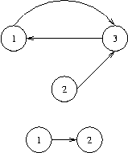

Home Page
F.A.Qs
Statistical Charts
Past Contests
Scheduled Contests
Award Contest
| Online Judge | Problem Set | Authors | Online Contests | User | ||||||
|---|---|---|---|---|---|---|---|---|---|---|
| Web Board Home Page F.A.Qs Statistical Charts | Current Contest Past Contests Scheduled Contests Award Contest | |||||||||
|
Language: The Bottom of a Graph
Description We will use the following (standard) definitions from graph theory. Let V be a nonempty and finite set, its elements being called vertices (or nodes). Let E be a subset of the Cartesian product V×V, its elements being called edges. Then G=(V,E) is called a directed graph.
Let n be a positive integer, and let p=(e1,...,en) be a sequence of length n of edges ei∈E such that ei=(vi,vi+1) for a sequence of vertices (v1,...,vn+1). Then p is called a path from vertex v1 to vertex vn+1 in G and we say that vn+1 is reachable from v1, writing (v1→vn+1). Here are some new definitions. A node v in a graph G=(V,E) is called a sink, if for every node w in G that is reachable from v, v is also reachable from w. The bottom of a graph is the subset of all nodes that are sinks, i.e., bottom(G)={v∈V|∀w∈V:(v→w)⇒(w→v)}. You have to calculate the bottom of certain graphs. Input The input contains several test cases, each of which corresponds to a directed graph G. Each test case starts with an integer number v, denoting the number of vertices of G=(V,E), where the vertices will be identified by the integer numbers in the set V={1,...,v}. You may assume that 1<=v<=5000. That is followed by a non-negative integer e and, thereafter, e pairs of vertex identifiers v1,w1,...,ve,we with the meaning that (vi,wi)∈E. There are no edges other than specified by these pairs. The last test case is followed by a zero. Output For each test case output the bottom of the specified graph on a single line. To this end, print the numbers of all nodes that are sinks in sorted order separated by a single space character. If the bottom is empty, print an empty line.  Sample Input 3 3 1 3 2 3 3 1 2 1 1 2 0 Sample Output 1 3 2 Source |
[Submit] [Go Back] [Status] [Discuss]
All Rights Reserved 2003-2013 Ying Fuchen,Xu Pengcheng,Xie Di
Any problem, Please Contact Administrator